Odara Documentation
The AI-first, open-source ETL/ELT platform built in Rust and React. Design data pipelines visually, transform with SQL and Python, and orchestrate at scale.
1. Getting Started
1.1 What is Odara?
Odara is an AI-first, open-source ETL/ELT platform designed to disrupt traditional enterprise data integration tools such as Talend, Informatica, and SSIS. It combines a high-performance Rust backend with a modern React frontend to deliver a visual pipeline editor that is fast, extensible, and developer-friendly.
At its core, Odara uses Apache DataFusion as its SQL engine, which operates on Apache Arrow columnar memory format. This means data transformations happen in-memory at native speed without serialization overhead. For more flexible transformations, Odara also supports Python via subprocess execution with PyArrow for zero-copy data exchange.
Key characteristics that distinguish Odara from other ETL platforms:
- Performance-first architecture — Written in Rust with no garbage collection pauses. Execution is asynchronous and concurrent using Tokio.
- Visual pipeline editor — Built with React Flow, enabling drag-and-drop pipeline design with real-time execution feedback via Server-Sent Events (SSE).
- Polyglot transforms — Mix SQL and Python in the same pipeline. SQL executes in DataFusion; Python runs in a subprocess with pandas.
- Small blocks philosophy — Each node does one thing well. Complex pipelines are assembled by composing small, focused components.
- AI-assisted development — Integrated AI chat with support for DeepSeek, OpenAI, Anthropic, and Google Gemini to generate SQL, Python, and entire pipelines from natural language.
- Lightweight persistence — SQLite with WAL mode for metadata, pipeline definitions, execution history, and context variables. No heavy database infrastructure required.
- Encrypted credentials — All connection credentials are encrypted at rest using AES-GCM.
1.2 Architecture
Odara follows a modular crate-based architecture. Each crate has a clear responsibility and communicates through well-defined interfaces.
| Crate | Responsibility |
|---|---|
odarax-core | Pipeline execution engine, DataFusion integration, file connectors (CSV, Excel, XML, Magic File), cloud connectors (S3, Google Drive, Azure Blob), FTP/SFTP, REST client, Maestro orchestrator, Python subprocess executor, context management |
odarax-api | HTTP API server built on Axum. Routes, handlers, SSE streaming, SQLite storage layer, file browsing, schema inference |
odarax-connectors | Database connectors: PostgreSQL, MySQL, Oracle, SQL Server, MongoDB, Snowflake. Source and target operations with bulk loading |
odarax-ai | AI integration layer. DeepSeek, OpenAI, Anthropic, and Gemini API clients. Prompt templates for SQL, Python, and pipeline generation |
odarax-scheduler | Job scheduling with cron expressions. Triggers pipeline and maestro executions on schedule |
The frontend is a single-page React application that communicates with the backend exclusively through REST API calls and SSE connections. All data between pipeline nodes passes as Apache Arrow RecordBatch objects in memory, ensuring zero-copy transfers for SQL operations and efficient serialization for Python subprocess communication.
The execution flow follows this path:
- User designs pipeline visually in the React Flow canvas
- Pipeline definition is saved to SQLite via the REST API
- User triggers execution; the API creates a
CancellationTokenand spawns the executor - The executor traverses the DAG topologically, executing each node
- Progress events stream back to the frontend via SSE
- Results (row counts, errors, previews) are stored in SQLite for later review
1.3 Installation
Odara is distributed as a pre-built binary — no compilation, no Rust, no Node.js required. Just download, install, and run.
Ubuntu / Debian (amd64)
# 1. Download the .deb package wget https://github.com/odara-data/odara-community/releases/latest/download/odara_0.1.0_amd64.deb # 2. Install sudo dpkg -i odara_0.1.0_amd64.deb # If you get dependency errors: sudo apt-get install -f # 3. Start Odara odara
Odara starts on port 3002 and automatically opens your browser at http://localhost:3002.
Windows (amd64)
- Download
odara_0.1.0_windows_amd64.zipfrom the Releases page. - Right-click the
.zipfile and select Extract All... to a folder (e.g.,C:\Program Files\Odara). - Double-click
start.batto start.
Odara starts on port 3002 and automatically opens your browser at http://localhost:3002.
macOS (Apple Silicon / ARM64)
# 1. Download curl -LO https://github.com/odara-data/odara-community/releases/latest/download/odara_0.1.0_macos_arm64.tar.gz # 2. Extract tar -xzf odara_0.1.0_macos_arm64.tar.gz # 3. Remove macOS quarantine flag (required for unsigned binaries) xattr -rd com.apple.quarantine odara-macos-arm64/ # 4. Start Odara ./odara-macos-arm64/odara # Optional: copy to your PATH for global access sudo cp odara-macos-arm64/odara /usr/local/bin/ odara
Python Setup (Optional)
Python is only required if you use Python Transform nodes. If you only use SQL transforms, file connectors, and database connectors, Python is not needed.
- Install Python 3.9+ from python.org
- On Windows: make sure to check "Add Python to PATH" during installation
- Install the PyArrow library:
pip install pyarrow
- Verify:
python --version # Should show Python 3.9+ python -c "import pyarrow; print(pyarrow.__version__)"
python opens the Microsoft Store instead of running Python, go to Settings > Apps > Advanced app settings > App execution aliases and toggle off both python.exe and python3.exe.
1.4 Quick Start
Follow this 5-minute tutorial to create and run your first pipeline.
- Start Odara. Run
./start.sh(Linux/macOS) or double-clickstart.bat(Windows). Your browser will open automatically athttp://localhost:3002. - Create a project. Click the project dropdown at the top-left of the editor, select "New Project", enter a name (e.g., "My First Project"), and choose a workspace directory.
- Open the Nodes palette. Click the "Nodes" tab in the left sidebar. You will see three categories: INGEST, TRANSFORM, and DELIVER.
- Add a CSV Source. Drag "CSV Source" from INGEST onto the canvas. Click the node to open the Properties panel. Set the file path to a CSV file on your system.
- Add a SQL Transform. Drag "SQL Transform" from TRANSFORM onto the canvas. In the code editor, write a query such as:
SELECT * FROM input WHERE amount > 100 ORDER BY amount DESC
- Add a Console Target. Drag "Console" from DELIVER onto the canvas.
- Connect the nodes. Drag from the output port (right side) of CSV Source to the input port (left side) of SQL Transform. Then connect SQL Transform to Console.
- Run the pipeline. Click the "Run" button in the toolbar. Watch nodes turn green as they complete. Open the Console panel at the bottom to see the output data.
input table name in SQL Transform refers to the data arriving from the upstream node. If a node has multiple inputs, each connection is named after the source node.
1.5 System Requirements
| Component | Minimum | Recommended |
|---|---|---|
| Operating System | Ubuntu 20.04+, Windows 10/11, macOS 12+ | Ubuntu 22.04+ |
| RAM | 4 GB | 8 GB+ |
| Disk Space | 500 MB | 2 GB+ |
| Python (optional) | 3.9+ with PyArrow | 3.11+ |
| Browser | Chrome, Firefox, Edge | Chrome 120+ |
No Rust, Node.js, or build tools required. Odara ships as a self-contained binary with the frontend bundled inside.
Python is only needed if you use Python Transform nodes. All other features (SQL transforms, file connectors, database connectors, REST APIs, cloud storage) work without Python.
2. Projects
2.1 Creating a Project
Every workspace in Odara begins with a project. A project is a self-contained unit that holds all your pipelines, maestros, resources, variables, and execution history.
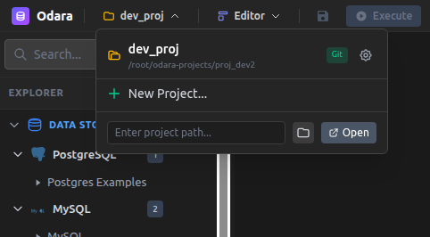
To create a new project:
- Click the project dropdown at the top-left corner of the interface.
- Select "New Project" from the menu.
- Enter a project name and select or create a workspace directory on your filesystem.
- Click "Create". Odara initializes the project structure with a SQLite database and default configuration.
2.2 Project Selector
The project selector dropdown at the top-left of the editor shows all available projects. Click any project to switch to it immediately. All pipelines, resources, and state associated with that project load into the editor.
You can also open a project by its filesystem path using the "Open by Path" option. This is useful for projects created outside of Odara or shared via Git.
2.3 Project Settings
Access project settings through the gear icon in the project dropdown. Settings include:
- AI Provider — Choose between DeepSeek, OpenAI, Anthropic, or Google Gemini for AI-assisted features.
- AI Model — Select the specific model to use (e.g., gpt-4, claude-3, deepseek-chat).
- API Key — Enter your AI provider API key (stored securely).
- Default Environment — Set which environment (Dev, QA, Prod) is active by default.
2.4 Project Structure
Each project creates the following structure on disk:
{project_path}/
data/
odara.db # SQLite database (WAL mode)
odara.db-wal # Write-ahead log
odara.db-shm # Shared memory file
screenshots/ # Auto-captured pipeline screenshots
pipeline_{id}.png
maestro_{id}.png
The SQLite database contains all pipeline definitions, node configurations, metadata connections, context variables, execution history, and scheduling rules. Pipeline screenshots are automatically captured each time you save, providing a visual record for documentation.
3. Editor
3.1 Interface Overview
The Odara editor is divided into several panels that work together to provide a comprehensive pipeline design environment.
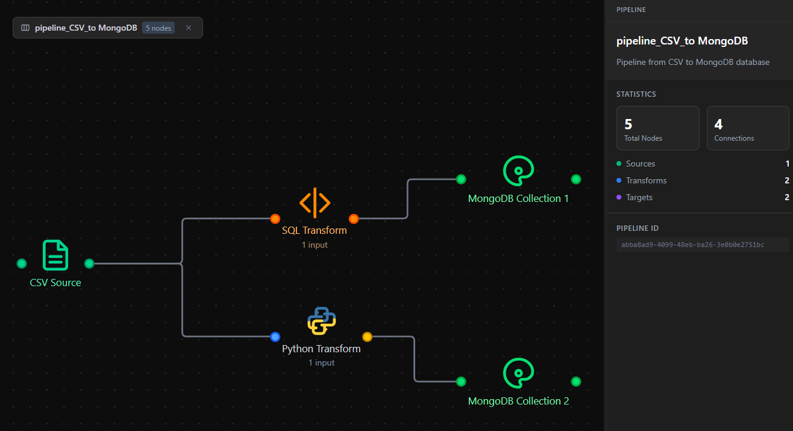
- Canvas (center) — The React Flow-powered visual editor where you design pipelines by placing and connecting nodes. Supports zoom, pan, minimap, and multi-select.
- Sidebar (left) — Three tabs: Explorer (pipeline list), Nodes (component palette), and Resources (connections and variables).
- Properties Panel (right) — Configuration panel that appears when you select a node. Shows all settings specific to that node type.
- Console (bottom) — Execution log showing real-time progress, row counts, errors, and timing information.
- Tab Bar (top) — Open multiple pipelines in tabs. Each tab maintains its own independent state.
- Toolbar — Run, Abort, Save, Undo, and other action buttons.
3.2 Explorer
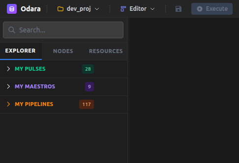
The Explorer tab in the left sidebar organizes your project items into three collapsible sections:
- MY MAESTROS — Pipeline orchestration workflows
- MY PIPELINES — Data transformation pipelines
Each section shows a count badge (e.g., "3") and a search field for filtering. Right-click any item for context menu options: Rename, Duplicate, Delete. Double-click to open in a new tab.
3.3 Nodes Palette
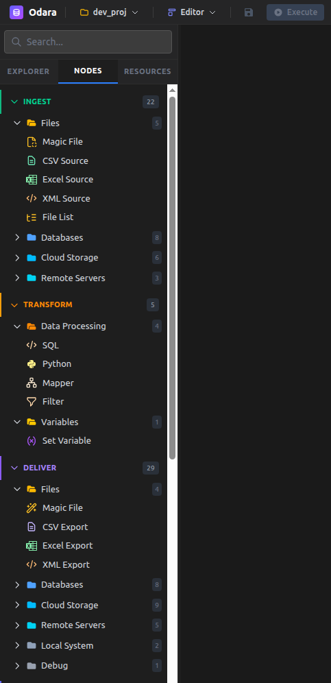
The Nodes tab in the left sidebar presents the complete catalog of available components, organized into three color-coded categories:
INGEST (22 nodes)
Data sources: files (CSV, Excel, XML, Magic File), databases (PostgreSQL, MySQL, Oracle, MSSQL, MongoDB, Snowflake, DB2, ODBC), cloud storage (S3, Google Drive, Azure Blob), remote (FTP/SFTP, REST Source), local (File List)
TRANSFORM (5 nodes)
SQL Transform, Python Transform, Filter, Mapper, Set Variable
DELIVER (29 nodes)
File targets, database targets, cloud storage targets, FTP targets, REST Target, Email Target, Console, Folder/File Management, control flow (Sleep, RunAfter, LoopWhile)
3.4 Adding Nodes
There are two ways to add nodes to the canvas:
- Drag and drop — Click and drag a node from the Nodes palette onto the canvas. Release the mouse to place the node at the desired position.
- AI generation — Use the AI Assistant to describe your pipeline in natural language. The AI will generate nodes and connections automatically.
3.5 Connecting Nodes
Nodes communicate through directed edges that define the data flow. To create a connection:
- Hover over the output port (small circle on the right side of a node). The port highlights when hoverable.
- Click and drag from the output port toward the target node.
- Release on the input port (small circle on the left side of the target node).
A colored edge appears connecting the two nodes, indicating data will flow from source to target during execution. You can delete an edge by clicking on it and pressing Delete.
3.6 Configuring Nodes
Click any node on the canvas to open its Properties panel on the right side. Each node type has specific configuration fields.
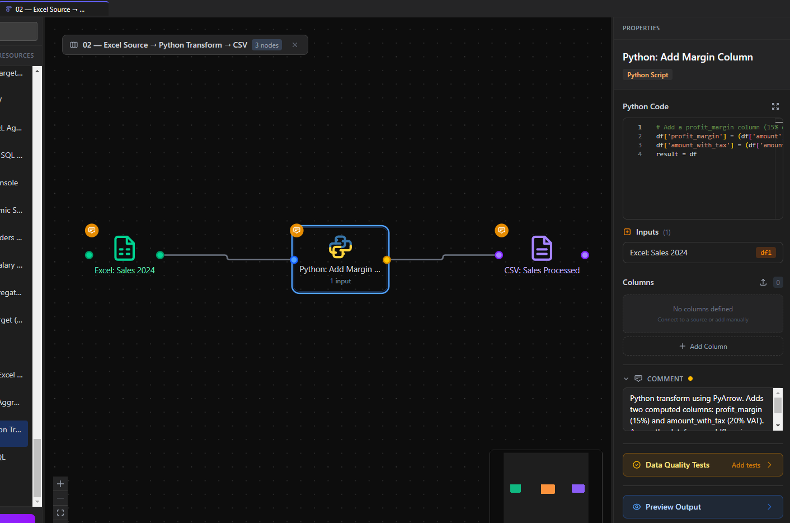
Common properties shared by most nodes include:
- Name — Display label on the canvas. Also used as the table name in SQL transforms.
- Description — Optional text for documentation purposes.
- Active — Toggle to enable/disable the node during execution.
3.7 Multi-Tab Support
Odara supports opening multiple pipelines and maestros simultaneously in separate tabs. Each tab maintains its own independent state including:
- Canvas zoom level and pan position
- Selected node and properties panel
- Console log entries
- Execution state (running, completed, failed)
Tabs are displayed in the tab bar at the top of the editor. Click a tab to switch to it. Close a tab by clicking the X icon. Unsaved changes are indicated with a dot on the tab.
3.8 Canvas Controls
| Control | Action |
|---|---|
| Scroll wheel | Zoom in/out |
| Click + drag (empty area) | Pan the canvas |
| Fit View button | Zoom to fit all nodes |
| Minimap | Overview of canvas; click to navigate |
| Ctrl+A | Select all nodes |
| Delete/Backspace | Remove selected nodes or edges |
| Ctrl+Z | Undo last action |
| Ctrl+S | Save pipeline |
3.9 Preview Output
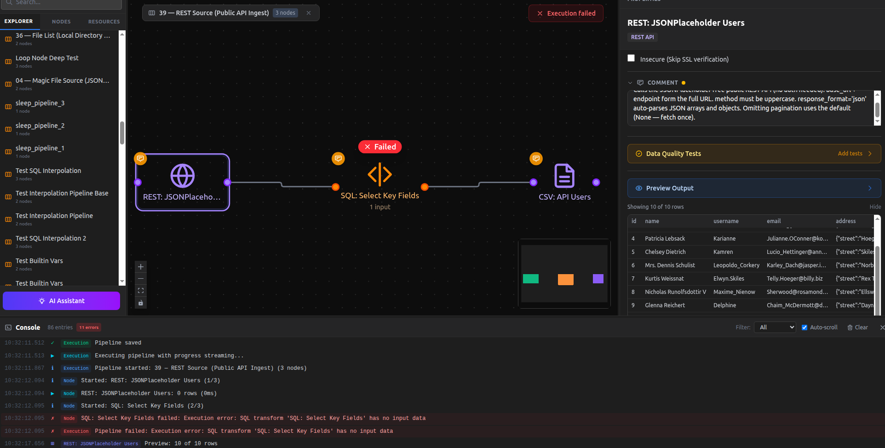
During or after execution, you can preview the output of any node by clicking the preview button. The preview panel shows:
- A data table with column headers and typed values
- Row count indicator (e.g., "Showing 20 of 1,453 rows")
- Column data types
- Scrollable table for wide datasets
Preview data is sampled from the node's output during execution and stored for later inspection. This allows you to verify transformations without running the entire pipeline again.
3.10 Execution
To execute a pipeline, click the Run button in the toolbar. Execution uses Server-Sent Events (SSE) for real-time progress streaming. As each node executes:
- The node border turns blue (currently executing)
- On success, the node turns green with a checkmark
- On failure, the node turns red with an error icon
- Skipped nodes (inactive or unreachable) remain gray
The console at the bottom shows detailed step-by-step logs with timestamps, row counts, and duration for each node. If a node fails, the error message and stack trace appear in the console.
You can abort a running pipeline at any time by clicking the Abort button. This sends a cancellation signal that gracefully stops execution after the current node completes.
3.11 Console Log
The console panel at the bottom of the editor provides a chronological log of execution events. Each entry includes:
- Timestamp — When the event occurred
- Severity — Info (blue), Warning (yellow), or Error (red)
- Source — Either "Execution" (pipeline-level) or the specific node name
- Message — Description of what happened, including row counts and durations
Controls: Filter by All or Errors only; Auto-scroll toggle to follow new entries; Clear to reset the log.
3.12 Pipeline Screenshots
Every time you save a pipeline, Odara automatically captures a screenshot of the current canvas state. These screenshots are stored in {project_path}/data/screenshots/pipeline_{id}.png and are used for:
- Auto-generated project documentation
- Execution history visual reference
- Quick preview in the Explorer
3.13 Data Quality Tests
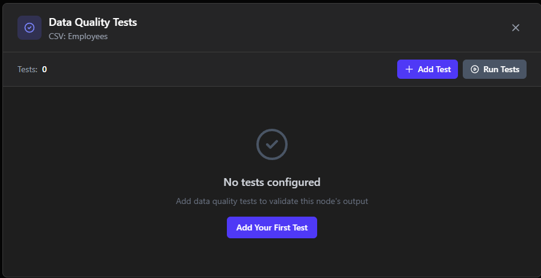
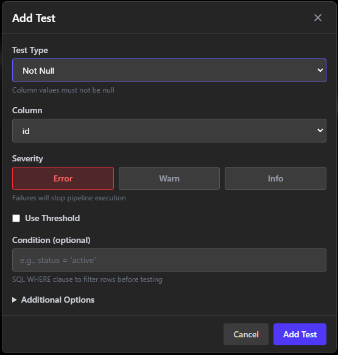
Data quality tests validate your data at specific points in the pipeline. You can add tests to any node by opening the "Data Quality" tab in the properties panel.
Available test types:
| Type | Description | Example |
|---|---|---|
| Not Null | Ensures a column has no null values | Column "email" must not be null |
| Unique | Ensures all values in a column are distinct | Column "customer_id" must be unique |
| Range | Validates values fall within a min/max range | Column "age" between 0 and 150 |
| Custom SQL | Run a custom SQL assertion | COUNT(*) WHERE status NOT IN ('active','inactive') = 0 |
Each test has a severity level: Error (stops execution), Warning (logs but continues), or Info (informational only). You can also set a threshold percentage to allow a small number of failures (e.g., "allow up to 1% null values").
4. Nodes Reference
4.1 File Sources
4.1.1 CSV Source SOURCE
Reads data from CSV (Comma-Separated Values) files. CSV Source is the most commonly used file ingest node. It supports various delimiter formats and provides options for handling headers, skipping rows, and limiting the number of rows read.
| Property | Description | Default |
|---|---|---|
| File Path | Absolute or relative path to the CSV file | — |
| Delimiter | Column separator: Comma, Semicolon, Tab, Pipe | Comma |
| Has Header | Whether the first row contains column names | true |
| Skip Rows | Number of rows to skip from the beginning | 0 |
| Row Limit | Maximum rows to read (0 = unlimited) | 0 |
| Columns | Specific columns to select (empty = all) | All |
@date to read dated files: /data/sales_@date.csv
4.1.2 Excel Source SOURCE
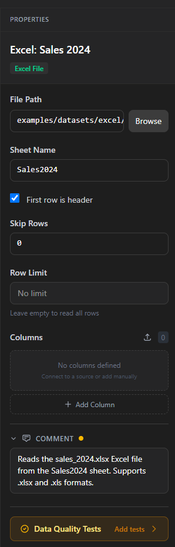
Reads data from Excel files (.xlsx format). Excel Source supports sheet selection, custom header row positions, row skipping, and column filtering.
| Property | Description | Default |
|---|---|---|
| File Path | Path to the .xlsx file | — |
| Sheet Name | Name of the sheet to read (empty = first sheet) | First sheet |
| Header Row | Row number containing column headers (1-based) | 1 |
| Skip Rows | Rows to skip after the header | 0 |
| Row Limit | Maximum rows to read | 0 (unlimited) |
| Columns | Specific columns to include | All |
4.1.3 XML Source SOURCE
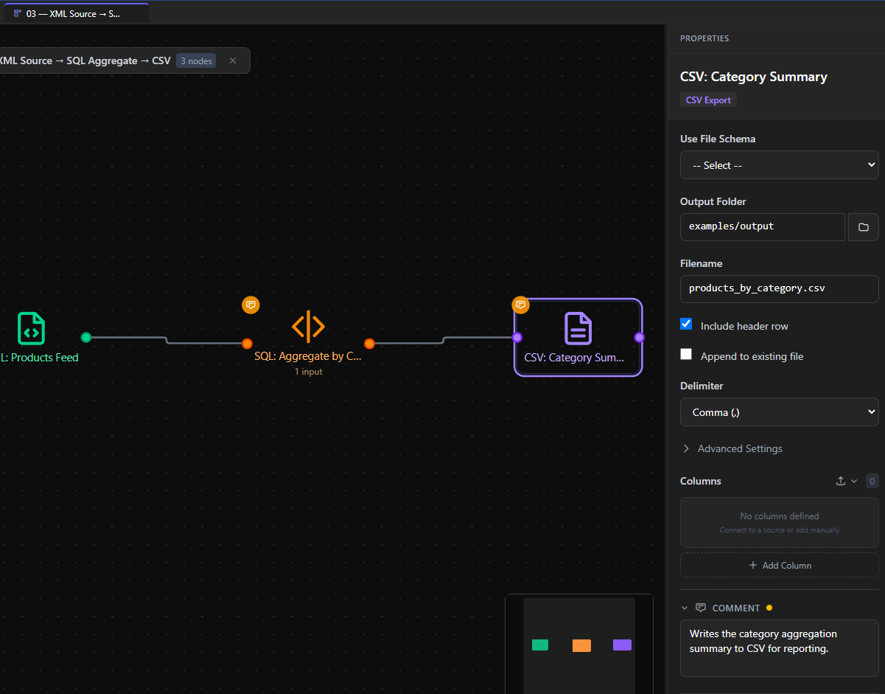
Reads data from XML files. XML Source flattens hierarchical XML into a tabular format by specifying the row element path.
| Property | Description | Default |
|---|---|---|
| File Path | Path to the XML file | — |
| Root Element | Root XML element name | Auto-detect |
| Row Element Path | XPath-like path to the repeating row element | — |
4.1.4 Magic File SOURCE
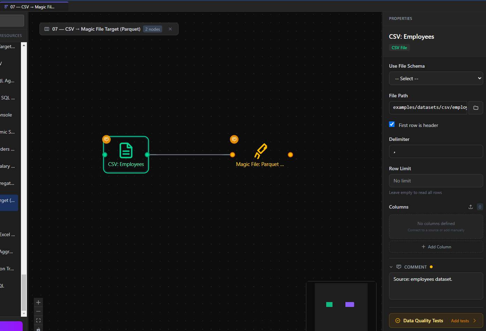
Magic File is an intelligent file reader that automatically detects the file format based on the extension and content. It supports CSV, JSON, NDJSON (newline-delimited JSON), Parquet, Excel, and XML. Simply provide the file path and Magic File handles the rest.
This is especially useful in pipelines that process files from external sources where the format may vary, or when you want to keep configuration minimal.
4.2 Database Sources
All database source nodes share a common pattern: select or configure a connection, then write a SQL query (or configure collection/filter for MongoDB). The connection can come from a saved Resource (Data Store) or be configured directly in the node properties.
4.2.1 PostgreSQL Source SOURCE
Connects to a PostgreSQL database and executes a SQL query. Supports all PostgreSQL data types with automatic mapping to Arrow types.
| Property | Description |
|---|---|
| Connection | Select from saved Data Stores or configure manually (host, port, database, username, password) |
| SQL Query | SQL statement to execute. Full PostgreSQL dialect supported. Use the built-in code editor with syntax highlighting. |
| Schema | Optional schema name for schema introspection |
4.2.2 MySQL Source SOURCE
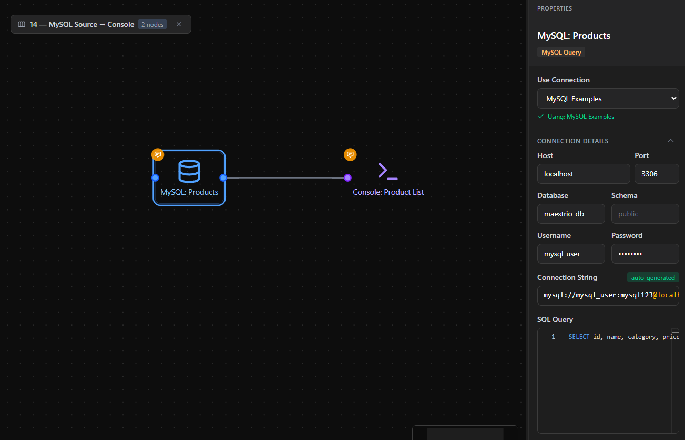
Connects to a MySQL database. Supports MySQL 5.7+ and MariaDB. All MySQL data types are mapped to their Arrow equivalents.
4.2.3 Oracle Source SOURCE
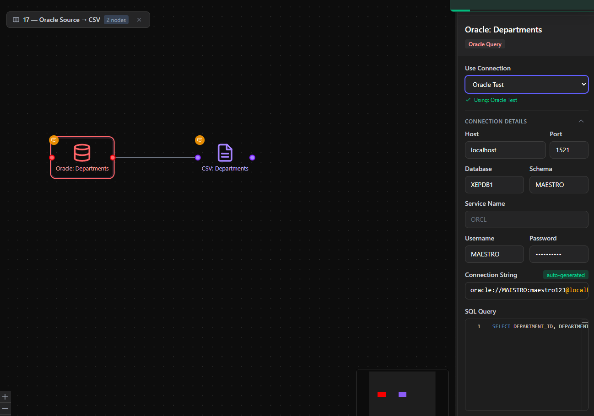
Connects to Oracle Database via the sibyl driver. Requires Oracle Instant Client. Supports service names, SIDs, and TNS names for connection resolution.
4.2.4 SQL Server Source SOURCE
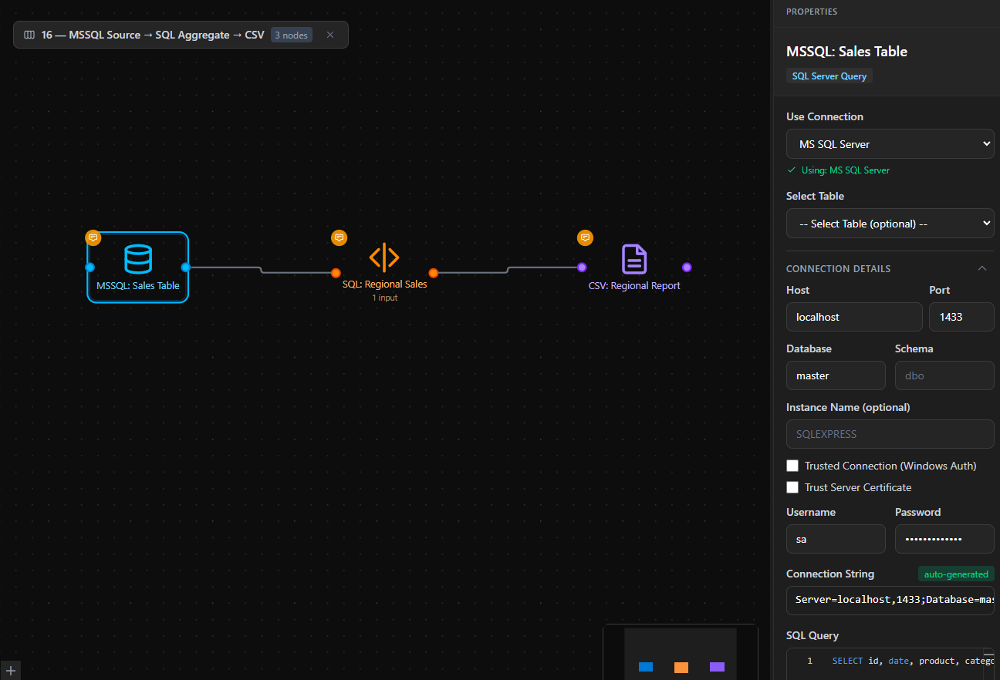
Connects to Microsoft SQL Server via TDS protocol (using the tiberius crate). Supports named instances, Windows authentication (trusted connection), and certificate trust options.
| Property | Description |
|---|---|
| Instance Name | Named instance (e.g., SQLEXPRESS). Leave empty for default instance. |
| Trusted Connection | Use Windows/Integrated authentication instead of SQL authentication |
| Trust Certificate | Skip TLS certificate verification (useful for dev environments) |
4.2.5 MongoDB Source SOURCE
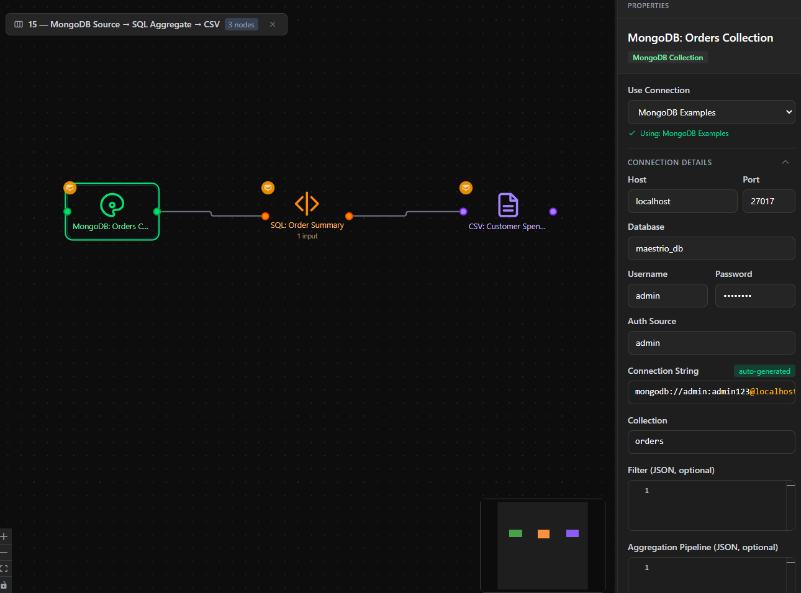
Connects to MongoDB and reads documents from a collection. Unlike SQL databases, MongoDB Source offers two modes of querying:
- Filter mode — Provide a JSON filter document (e.g.,
{"status": "active", "age": {"$gte": 18}}) - Aggregation mode — Provide a full aggregation pipeline as a JSON array (e.g.,
[{"$match": ...}, {"$group": ...}])
Documents are automatically flattened into a tabular format. Nested objects become dot-notation columns (e.g., address.city).
4.2.6 Snowflake Source SOURCE
Connects to Snowflake cloud data warehouse. Requires account URL, warehouse, database, schema, and role.
4.2.7 DB2 Source SOURCE
Connects to IBM DB2 via ODBC connection string. Requires DB2 ODBC driver installed on the system.
4.2.8 ODBC Source SOURCE
Generic ODBC connector for any database that provides an ODBC driver. Configure using a full ODBC connection string. This provides connectivity to databases not natively supported (e.g., SAP HANA, Teradata, Informix).
4.3 Cloud Storage Sources
4.3.1 S3 List SOURCE
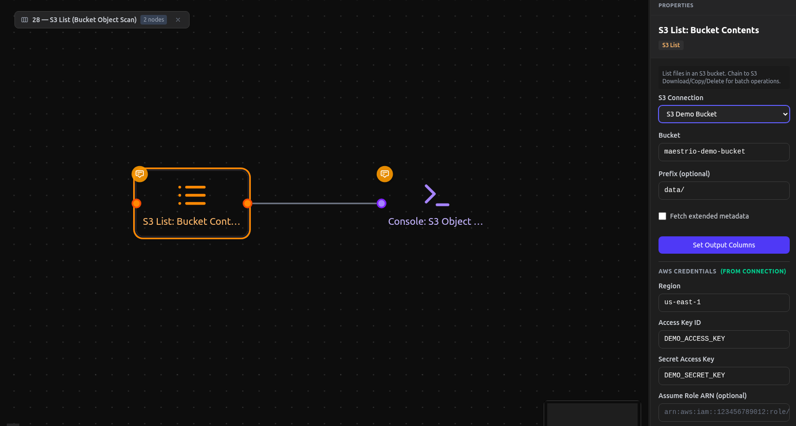
Lists objects in an Amazon S3 bucket or S3-compatible storage (MinIO, Ceph, DigitalOcean Spaces, etc.). Returns a table with columns: key, size, last_modified, etag.
| Property | Description |
|---|---|
| Connection | Select from saved File Storage resources or configure manually |
| Region | AWS region (e.g., us-east-1) |
| Access Key / Secret Key | AWS IAM credentials |
| Bucket | S3 bucket name |
| Prefix | Filter objects by key prefix (e.g., data/2024/) |
| Recursive | Include objects in subdirectories |
| Assume Role ARN | Optional IAM role to assume for cross-account access |
| Endpoint URL | Custom endpoint for S3-compatible services |
4.3.2 S3 Download SOURCE
Downloads a single file from S3 to the local filesystem. Typically used before a file source node in the pipeline.
4.3.3 Google Drive List SOURCE
Lists files in a Google Drive folder using OAuth2 authentication. Returns file metadata: id, name, mimeType, size, modifiedTime.
| Property | Description |
|---|---|
| Client ID | OAuth2 client ID from Google Cloud Console |
| Client Secret | OAuth2 client secret |
| Refresh Token | Long-lived refresh token for offline access |
| Folder ID | Google Drive folder ID (from the URL) |
4.3.4 Google Drive Download SOURCE
Downloads a file from Google Drive to local storage. For Google Workspace files (Docs, Sheets, Slides), specify an export format (e.g., xlsx, csv, pdf).
4.3.5 Azure Blob List SOURCE
Lists blobs in an Azure Blob Storage container. Requires the azure feature flag.
4.3.6 Azure Blob Download SOURCE
Downloads a blob from Azure Blob Storage to the local filesystem. Supports SAS tokens and connection string authentication.
4.4 Remote Sources
4.4.1 FTP List SOURCE
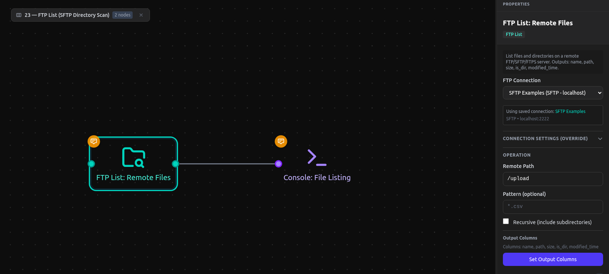
Lists files on a remote FTP, SFTP, or FTPS server. Returns: name, size, modified date, type (file/directory).
| Property | Description |
|---|---|
| Protocol | FTP (plain), SFTP (SSH), or FTPS (FTP over TLS) |
| Host / Port | Server address and port (21 for FTP, 22 for SFTP, 990 for FTPS) |
| Username / Password | Authentication credentials |
| Remote Path | Directory to list (e.g., /upload/daily/) |
| Pattern | Glob pattern to filter files (e.g., *.csv, report_*.xlsx) |
| Recursive | Include subdirectories |
4.4.2 FTP Get SOURCE
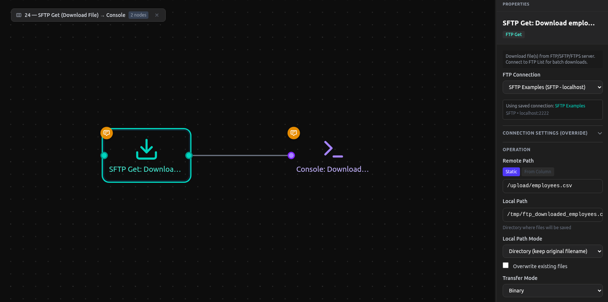
Downloads a file from a remote server to the local filesystem. Supports ASCII and Binary transfer modes.
4.4.3 REST Source SOURCE
REST Source is a powerful HTTP client node for consuming REST APIs. It supports multiple authentication methods, pagination strategies, and automatic response parsing.
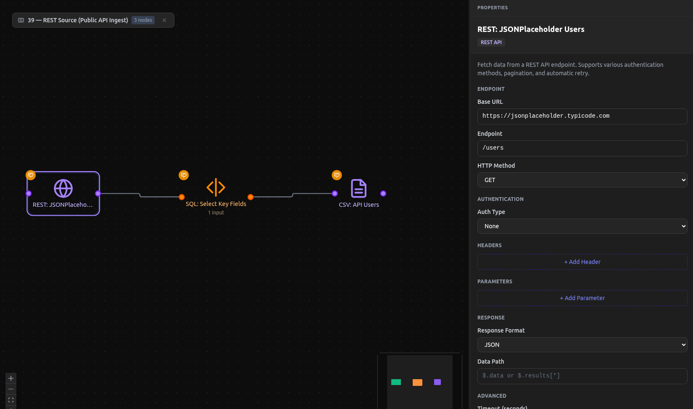
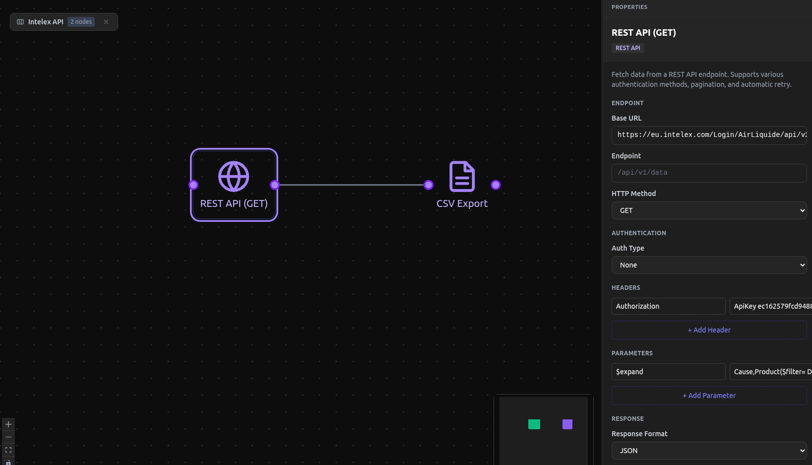
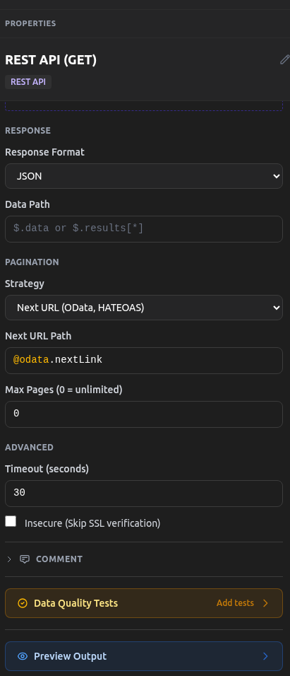
Connection Settings:
| Property | Description |
|---|---|
| Base URL | API base URL (e.g., https://api.example.com) |
| Endpoint | API path (e.g., /v1/users) |
| HTTP Method | GET, POST, PUT, PATCH, DELETE |
| Headers | Custom HTTP headers (key-value editor) |
| Query Parameters | URL query parameters (key-value editor) |
| Insecure Mode | Skip SSL certificate verification |
Authentication Options:
- None — No authentication
- Basic Auth — Username and password (Base64 encoded)
- Bearer Token — OAuth2 bearer token in Authorization header
- API Key — Key sent as header or query parameter
- OAuth2 Client Credentials — Client ID/Secret with token URL for machine-to-machine auth
- Pre-Request Token — Execute a preliminary request to obtain a token, then use it in the main request
Response Parsing:
- Format — JSON, CSV, or XML
- Data Path — JSONPath to the data array (e.g.,
$.value,$.data,$.results). Odara auto-detects common keys (value, data, results, items, records). - Nested flattening — Nested JSON objects like
{"Cause": {"Id": 1, "Name": "Fire"}}become flat columns:Cause.Id,Cause.Name - Type inference — Automatically detects integers, floats, booleans (not just strings)
Pagination Strategies:
| Strategy | How It Works | Use Case |
|---|---|---|
| None | Single request only | Small datasets |
| Next URL | Follow a next link in the response (e.g., @odata.nextLink) | OData, Microsoft Graph, HATEOAS APIs |
| Page Number | Increment a page parameter | Traditional page-based APIs |
| Offset/Limit | Increment offset by limit | Limit/offset APIs |
| Cursor | Use a cursor token from the response | Cursor-based APIs (Stripe, Slack) |
Advanced Features:
- Streaming page-by-page processing for datasets with 1M+ rows
- Page-level retry with exponential backoff (3 attempts per page by default)
- Partial results on failure (returns all data successfully fetched before the error)
4.5 Local Sources
4.5.1 File List SOURCE
Lists files and directories on the local filesystem. Returns: name, path, size, modified date, type (file/directory), extension.
| Property | Description |
|---|---|
| Directory Path | Root directory to scan |
| Pattern | Glob pattern (e.g., *.csv, **/*.json) |
| Recursive | Include subdirectories |
| Include Files | Include files in results |
| Include Directories | Include directories in results |
4.6 Transforms
4.6.1 SQL Transform TRANSFORM
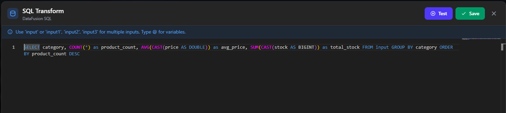
SQL Transform is the primary transformation node in Odara. It executes SQL queries using the Apache DataFusion engine, which provides a full SQL dialect operating on Apache Arrow columnar data.
The input data from upstream nodes is registered as tables. By default, a single input is available as the input table. When multiple nodes connect to a SQL Transform, each is accessible by its node name.
-- Single input: reference as 'input' SELECT category, COUNT(*) AS product_count, AVG(price) AS avg_price, SUM(stock) AS total_stock FROM input GROUP BY category ORDER BY product_count DESC
-- Multiple inputs: reference by node name SELECT o.order_id, o.amount, c.name, c.email FROM orders_csv o JOIN customers_db c ON o.customer_id = c.id WHERE o.amount > 100
Supported SQL features:
- SELECT, FROM, WHERE, GROUP BY, ORDER BY, HAVING, LIMIT
- JOINs: INNER, LEFT, RIGHT, FULL OUTER, CROSS
- Subqueries (correlated and uncorrelated)
- Common Table Expressions (WITH ... AS)
- UNION, UNION ALL, INTERSECT, EXCEPT
- Window functions: ROW_NUMBER, RANK, DENSE_RANK, LAG, LEAD, SUM OVER, etc.
- CASE expressions
- String, math, date/time, and aggregate functions
- CAST and type conversion
Additional options:
- Pre-SQL — SQL executed before the main query (e.g., creating temporary views)
- Post-SQL — SQL executed after the main query
- Variable interpolation — Use
@variable_nameto inject context variable values into SQL
4.6.2 Python Transform TRANSFORM
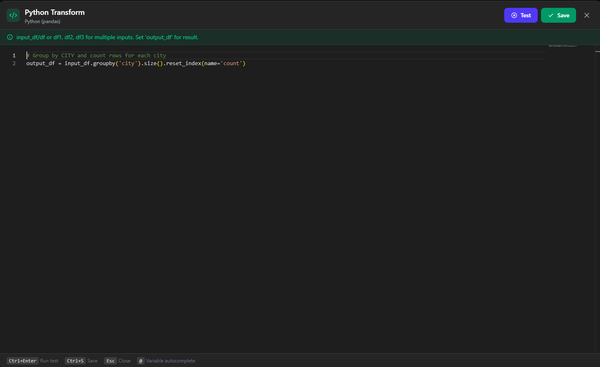
Python Transform executes custom Python code with full access to the pandas ecosystem. The input data arrives as a pandas DataFrame named df. Your code must return a DataFrame.
# Input data is available as 'df' (pandas DataFrame) # You can use any pandas operations # Add calculated columns df['profit_margin'] = (df['price'] - df['cost']) / df['price'] * 100 df['amount_with_tax'] = df['amount'] * 1.2 # Filter and transform df = df[df['profit_margin'] > 0] df['category'] = df['category'].str.upper() # Always return the DataFrame return df
Python Transform runs in a subprocess, so it does not affect the main Rust process. Data is exchanged using PyArrow for efficient serialization. You can import any Python library installed in your environment (numpy, scikit-learn, etc.).
4.6.3 Filter TRANSFORM
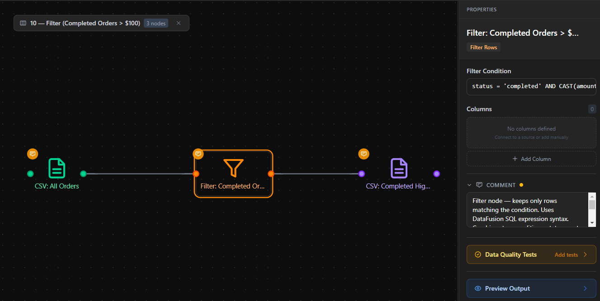
Filter applies a SQL WHERE condition to the incoming data, keeping only rows that match the condition. It is a lightweight alternative to SQL Transform when you only need to filter rows without transforming columns.
-- Example filter conditions status = 'completed' AND CAST(amount AS DOUBLE) > 100 -- Date filtering created_at >= '2024-01-01' AND created_at < '2025-01-01' -- Pattern matching email LIKE '%@company.com'
4.6.4 Mapper TRANSFORM
The Mapper is Odara's equivalent of Talend's tMap component. It provides a visual interface for complex data routing with:
- N inputs — Accept data from multiple upstream nodes
- M outputs — Route data to multiple downstream nodes
- Joins — Join inputs on key columns
- Expressions — SQL expressions for column transformations
- Column mapping — Drag columns from inputs to outputs
- Filtering — Apply conditions to each output
Open the Mapper editor by double-clicking the Mapper node. The visual editor shows input tables on the left, output tables on the right, and join configuration in the center.
Mapper workflow:
- Connect multiple source nodes to the Mapper's input ports
- Double-click the Mapper to open the visual editor
- Configure joins between input tables by selecting key columns
- Drag columns from input tables to output tables to create mappings
- Add SQL expressions for computed columns (e.g.,
CONCAT(first_name, ' ', last_name)) - Add filter conditions on each output table to route different subsets of data
- Connect each Mapper output port to a downstream target node
4.6.5 Set Variable TRANSFORM
Set Variable captures a value from the data stream and stores it as a context variable. This variable can then be used in downstream nodes via the @variable_name syntax.
Common use cases include:
- Incremental loads — Query
SELECT MAX(updated_at) FROM target_table, store as@last_sync, then useWHERE updated_at > '@last_sync'in the source query - Row counting — Store a count from one branch and use it in email notifications or conditional logic
- Dynamic filenames — Capture a value (e.g., report date) and use it in output file paths:
report_@report_date.csv - Cross-branch communication — Pass computed values between parallel pipeline branches using shared context variables
Set Variable evaluates an expression against the first row of the incoming data. The expression can be a column name (to capture that column's value) or a SQL expression.
4.7 Control Flow
4.7.1 Sleep CONTROL
Pauses pipeline execution for a specified number of seconds. Useful for rate-limiting API calls, waiting for external processes, or introducing delays in testing.
The delay value supports variable interpolation: set it to @delay_seconds for dynamic delays based on context variables.
4.7.2 RunAfter CONTROL
RunAfter is a synchronization point that waits for all upstream nodes to complete before allowing downstream execution to proceed. It does not transform data; it only controls execution order.
This is essential when you have parallel branches that must all finish before a subsequent step begins (e.g., loading data from multiple sources before running a consolidation query).
4.7.3 LoopWhile CONTROL
LoopWhile repeats execution of its downstream nodes as long as a SQL condition evaluates to true. This enables iterative processing patterns such as:
- Paginating through an API until no more data is returned
- Retrying a failed operation with a counter
- Processing data in batches until a threshold is met
The loop condition is a SQL expression evaluated against context variables. For example:
-- Loop while there are more pages to fetch @has_more_pages = 'true' -- Loop with a counter (max 10 iterations) CAST(@iteration_count AS INT) < 10
Inside the loop body, use a Set Variable node to update the loop condition variable. If the condition is never set to false, add a maximum iteration limit to prevent infinite loops.
4.8 File Targets
4.8.1 CSV Target TARGET
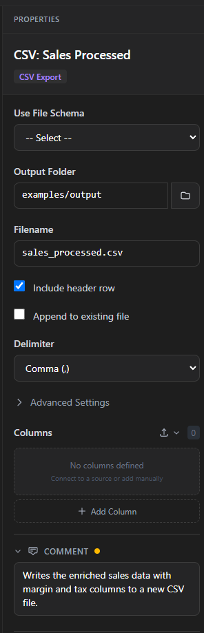
| Property | Description | Default |
|---|---|---|
| Output Folder | Directory to write the output file | — |
| Filename | Output filename (supports @variables) | output.csv |
| Delimiter | Column separator | Comma |
| Include Header | Write column headers as first row | true |
| Append Mode | Append to existing file instead of overwriting | false |
| Columns | Select specific columns to write | All |
4.8.2 Excel Target TARGET
Writes data to an Excel .xlsx file. Configure the output path and sheet name. If the file already exists, it is overwritten.
4.8.3 XML Target TARGET
Writes data as XML. Configure the root element name and row element name. Each row becomes an XML element with columns as child elements.
4.8.4 Magic File Target TARGET
Automatically selects the output format based on the file extension. Supports: .csv, .json, .ndjson, .parquet, .xlsx, .xml. This is the simplest way to write output when you want the format to be determined by the filename.
4.9 Database Targets
All database target nodes share a common set of operations:
| Setting | Options | Description |
|---|---|---|
| Table Operation (DDL) | None, Create, Drop+Create | None: table must exist. Create: create if missing. Drop+Create: drop and recreate every time. |
| Data Operation (DML) | Insert, Upsert, Update, Delete | Insert: append rows. Upsert: insert or update on key conflict. Update: update existing rows by key. Delete: remove matching rows. |
| Batch Size | Integer | Number of rows per database batch operation. Higher values improve throughput but use more memory. |
4.9.1 PostgreSQL Target TARGET
Writes data to PostgreSQL. Supports all DDL/DML operations. Uses COPY protocol for bulk inserts when batch size is large enough.
4.9.2 MySQL Target TARGET
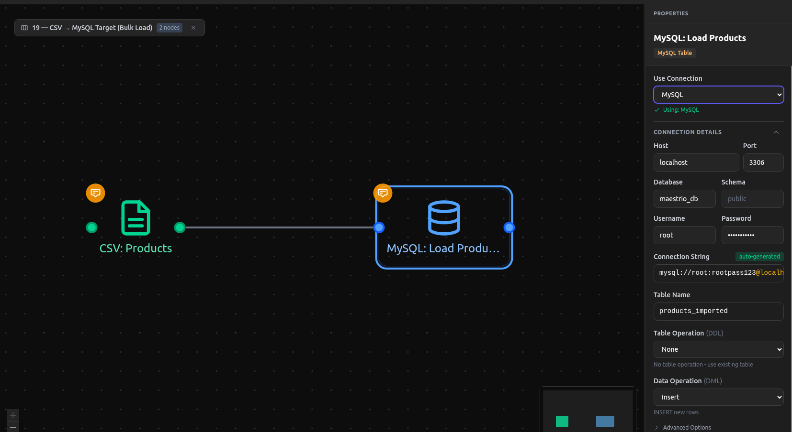
4.9.3 Oracle Target TARGET
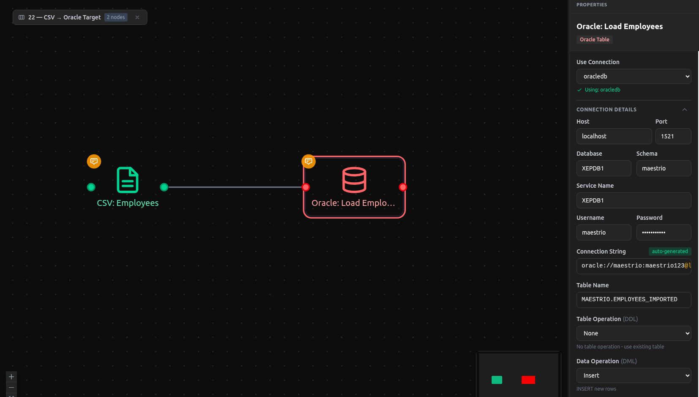
4.9.4 SQL Server Target TARGET
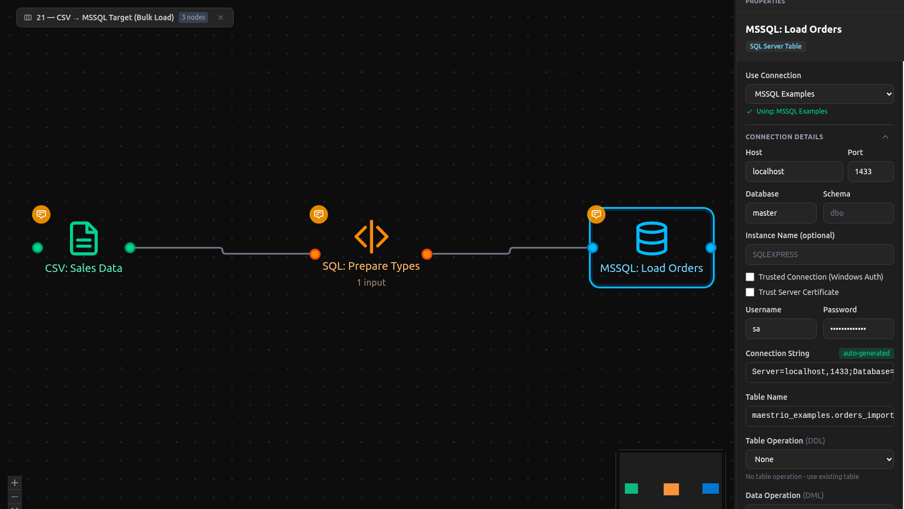
4.9.5 MongoDB Target TARGET
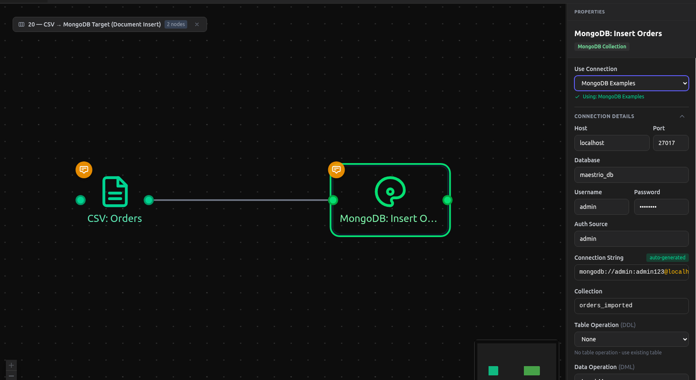
Writes documents to a MongoDB collection. Insert creates new documents; Upsert uses replaceOne with upsert: true on the specified key fields.
4.9.6 Snowflake Target TARGET
Writes data to Snowflake. Uses staged uploads for bulk loading. Requires account URL, warehouse, database, schema, and role.
4.9.7 DB2 Target TARGET
Writes data to IBM DB2 via ODBC. Supports standard DDL/DML operations.
4.9.8 ODBC Target TARGET
Generic ODBC target for any ODBC-compatible database. Uses parameterized batch inserts.
4.10 Cloud Storage Targets
4.10.1 S3 Upload TARGET
Uploads a local file to S3. Configure bucket, object key, content type, and optional ACL (private, public-read, etc.).
4.10.2 S3 Copy TARGET
Copies an object between S3 locations (same or different buckets). Useful for archiving or promoting files between environments.
4.10.3 S3 Delete TARGET
Deletes an object from S3 by bucket and key.
4.10.4 Google Drive Upload TARGET
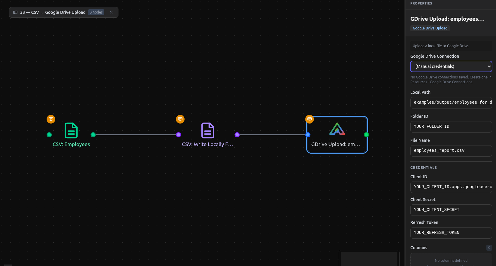
Uploads a file to a Google Drive folder. Configure OAuth2 credentials, target folder ID, and filename.
4.10.5 Google Drive Copy / Delete TARGET
Copy duplicates a file within Drive (specify source file ID and destination folder). Delete permanently removes a file by ID.
4.10.6 Azure Blob Upload / Copy / Delete TARGET
Upload, copy, and delete blobs in Azure Blob Storage. Requires the azure feature flag.
4.11 Remote Targets
4.11.1 FTP Put TARGET
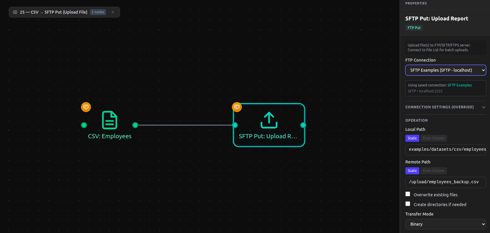
| Property | Description |
|---|---|
| Local Path | Path to the file to upload |
| Remote Path | Destination path on the server |
| Overwrite | Overwrite if file already exists |
| Create Directories | Create parent directories on the server if they do not exist |
| Transfer Mode | ASCII or Binary |
4.11.2 FTP Rename TARGET
Renames a file on the remote server. Provide old and new remote paths. This is commonly used to move files from a "processing" directory to a "completed" directory after successful pipeline execution.
4.11.3 FTP Delete TARGET
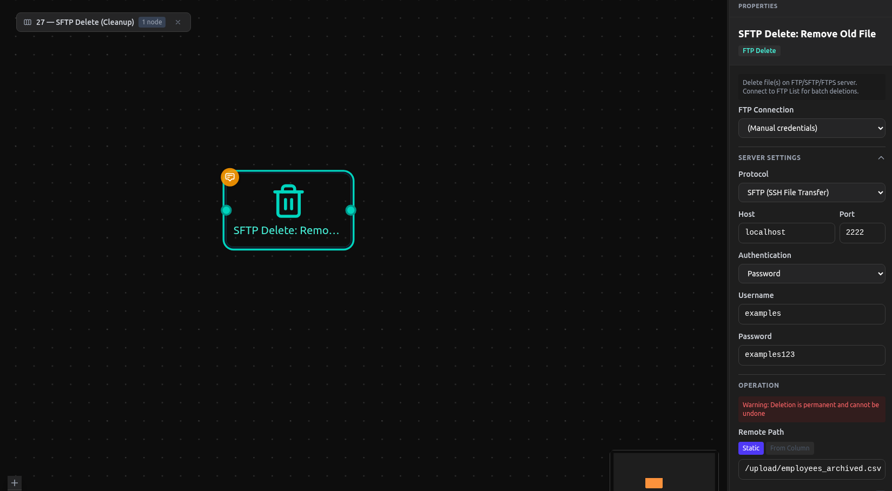
4.11.4 REST Target TARGET
REST Target sends data to a REST API endpoint. It supports the same authentication methods as REST Source, plus flexible body formatting and batch modes.
Body Format Options:
| Format | Description | Example |
|---|---|---|
| JSON Array | All rows as a JSON array | [{"id":1,"name":"A"},{"id":2,"name":"B"}] |
| JSON Lines | One JSON object per line (NDJSON) | {"id":1,"name":"A"}\n{"id":2,"name":"B"} |
| JSON Object | Array wrapped in an object key | {"data": [...]} |
| CSV | CSV-formatted body | Comma-separated with header |
| JSON Template | Custom template with {{column}} placeholders | {"user": "{{name}}", "email": "{{email}}"} |
Batch Modes:
- Single — One HTTP request per row. Best for APIs that accept individual records.
- Bulk — All rows in a single HTTP request. Best for bulk import APIs.
- Chunked — N rows per request (configurable chunk size). Best for APIs with payload size limits.
4.11.5 Email Target TARGET
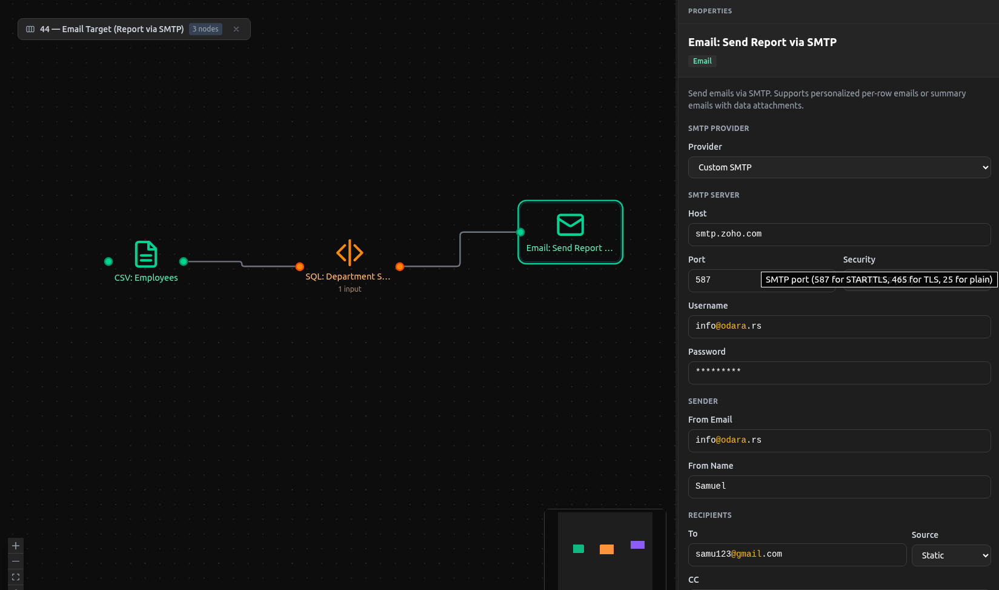
Email Target sends emails via SMTP. It includes presets for popular providers and supports rich formatting with variable interpolation.
SMTP Provider Presets:
- Gmail — smtp.gmail.com:587 (StartTLS)
- Outlook/Office 365 — smtp.office365.com:587 (StartTLS)
- Zoho Mail — smtp.zoho.com:587 (StartTLS)
- SendGrid — smtp.sendgrid.net:587 (StartTLS)
- Mailgun — smtp.mailgun.org:587 (StartTLS)
- Custom — Any SMTP server with configurable host, port, and security (None/StartTLS/SSL)
Email Fields: From, To, CC, BCC, Subject, and Body all support @variable interpolation. The body can be HTML or plain text.
Batch Modes:
- Per-row — Send a personalized email for each row (e.g., welcome emails to a list of users)
- Summary — Send a single summary email with data attached as CSV/Excel
4.12 Debug & Local
4.12.1 Console Output TARGET
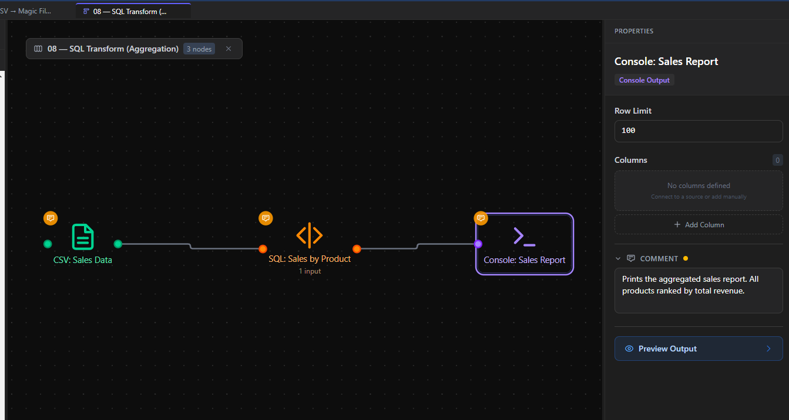
Console Output displays the incoming data as a formatted table in the execution console. It is primarily used for debugging and verifying intermediate results. Configure a row limit to control how many rows are displayed.
4.12.2 Folder Management TARGET
Performs filesystem operations on directories: create, delete, rename, and move. Useful for preparing output directories or cleaning up temporary folders as part of a pipeline.
4.12.3 File Management TARGET
Performs filesystem operations on individual files: copy, move, and delete. Supports variable interpolation in all path fields for dynamic file management.
5. Resources
5.1 Overview
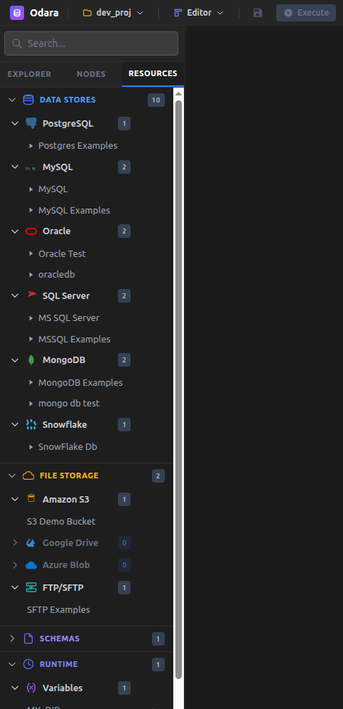
The Resources tab in the left sidebar provides centralized management of reusable configurations. Resources are shared across all pipelines in a project, eliminating the need to re-enter connection details for every node.
Resources are organized into four categories:
- Data Stores — Database connections (PostgreSQL, MySQL, Oracle, SQL Server, MongoDB, Snowflake, DB2, ODBC)
- File Storage — Cloud and remote storage connections (S3, Google Drive, Azure Blob, FTP/SFTP)
- Schemas — Reusable file format definitions
- Runtime — Context variables and environments
5.2 Data Stores
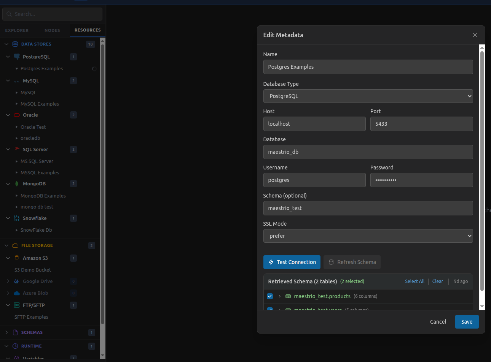
Data Stores define reusable database connections. When configuring a database source or target node, you can select a Data Store from the dropdown instead of entering connection details manually.
Creating a Data Store:
- Click the + button next to "Data Stores" in the Resources panel
- Select the database type (PostgreSQL, MySQL, Oracle, SQL Server, MongoDB, Snowflake, DB2, ODBC)
- Fill in connection details: host, port, database name, schema (if applicable), username, and password
- Click Test Connection to verify connectivity
- Click Save to store the connection
Schema Introspection: Once a Data Store is saved and connected, you can introspect its schema. This shows all tables, views, and their columns with data types. Click any table to see its column list, which can be referenced when writing SQL queries.
5.3 File Storage
File Storage resources define connections to cloud storage and remote file servers. These include:
- S3 — Region, access key, secret key, optional endpoint URL for S3-compatible services
- Google Drive — OAuth2 client ID, client secret, refresh token
- Azure Blob Storage — Account name, SAS token or connection string
- FTP/SFTP/FTPS — Protocol, host, port, username, password
5.4 Schemas
Schema resources define reusable file format specifications. Instead of configuring column names, types, and delimiters on every file node, define a schema once and reference it across multiple pipelines.
A schema definition includes:
- Column names and data types (String, Integer, Float, Boolean, Date, Timestamp)
- Format-specific settings (CSV delimiter, XML row element, JSON data path)
- Null handling and default values
5.5 Variables
Context variables are named values stored in the Runtime section of Resources. They can be referenced throughout your pipelines using the @variable_name syntax.
| Type | Description | Example |
|---|---|---|
| String | Text value | @output_dir = "/data/output" |
| Integer | Whole number | @batch_size = 5000 |
| Float | Decimal number | @tax_rate = 0.2 |
| Boolean | True/false | @debug_mode = true |
| Date | Date value | @cutoff_date = "2024-01-01" |
5.6 Environments
Environments allow you to define different variable values for different stages of your workflow (e.g., Dev, QA, Prod). Each environment can override any context variable.
For example, you might have:
- Dev:
@db_host= "localhost",@batch_size= 100 - QA:
@db_host= "qa-db.internal",@batch_size= 1000 - Prod:
@db_host= "prod-db.internal",@batch_size= 10000
Switch the active environment using the environment selector. All @variable references automatically resolve to the values defined for the active environment.
5.7 Using Variables
Variables can be used anywhere in Odara that accepts text input. The @variable_name syntax is replaced with the variable's value at execution time.
Where variables work:
- SQL queries:
WHERE created_at >= '@cutoff_date' - File paths:
/data/@environment/output_@date.csv - Connection strings:
@db_host:@db_port - REST URLs:
https://api.example.com/v1/@api_version/users - Email fields:
Subject: Daily Report for @date - Sleep duration:
@delay_seconds
Built-in variables (always available, no configuration needed):
| Variable | Description | Example Value |
|---|---|---|
@pipeline_name | Name of the executing pipeline | daily_etl |
@pipeline_id | UUID of the pipeline | a1b2c3d4-... |
@execution_id | UUID of the current execution | e5f6g7h8-... |
@timestamp | Current timestamp (ISO 8601) | 2024-12-15T10:30:00Z |
@date | Current date (YYYY-MM-DD) | 2024-12-15 |
@environment | Active environment name | Production |
6. Maestro (Orchestration)
6.1 What is Maestro
Maestro is Odara's pipeline orchestration layer. While a pipeline defines a single data flow (source to target), Maestro coordinates the execution of multiple pipelines with dependencies, parallel execution, conditional branching, and retry policies.
Think of Maestro as a "pipeline of pipelines." It answers questions like: "Run the customer ETL first, then the orders ETL, and if both succeed, run the report generation in parallel with the data quality check."
6.2 Canvas
The Maestro canvas uses the same React Flow editor as the pipeline canvas, but with orchestration-specific step types instead of data nodes. Steps are connected with edges that define the execution order and dependency graph.
Create a new Maestro from the Explorer panel under "MY MAESTROS". The Maestro canvas opens in a new tab, independent of any pipeline tabs.
6.3 Step Types
Pipeline Call
Execute a child pipeline by reference. Select any pipeline in the project. The step completes when the pipeline execution finishes. If the pipeline fails, the step fails (unless retry is configured).
Parallel Group
Execute multiple steps simultaneously. Configure max concurrency to limit how many steps run at the same time. Useful for independent pipelines that can run in parallel.
Series Group
Execute steps sequentially, one after another. Each step waits for the previous one to complete before starting. If any step fails, subsequent steps are skipped.
Conditional
Branch execution based on a SQL condition. Define a true branch and a false branch. The condition is evaluated against context variables and previous step results.
6.4 Retry Policies
Each Maestro step can have an individual retry policy:
| Setting | Description | Default |
|---|---|---|
| Max Attempts | Maximum number of execution attempts | 1 (no retry) |
| Initial Delay | Wait time before first retry (seconds) | 5 |
| Backoff Multiplier | Multiply delay by this factor for each subsequent retry | 2.0 (exponential) |
For example, with max_attempts=3, initial_delay=5s, and backoff=2.0: the first retry happens after 5 seconds, the second after 10 seconds.
6.5 Built-in Variables
Maestro provides additional built-in variables scoped to the orchestration execution:
| Variable | Description |
|---|---|
${pipeline.execution_id} | Execution ID of the most recently completed pipeline step |
${step.previous_result} | Status of the previous step (success/failed/skipped) |
${maestro.name} | Name of the Maestro workflow |
${step.name} | Name of the current step |
${step.index} | Zero-based index of the current step in execution order |
6.6 Running
Execute a Maestro by clicking the Run button in the Maestro canvas toolbar. Execution progress is streamed via SSE, showing each step's status in real-time on the canvas. You can abort a running Maestro at any time, which sends cancellation signals to all active pipeline executions.
Monitor Maestro executions in the Monitor page (see Section 9).
8. Schedule
8.1 Overview
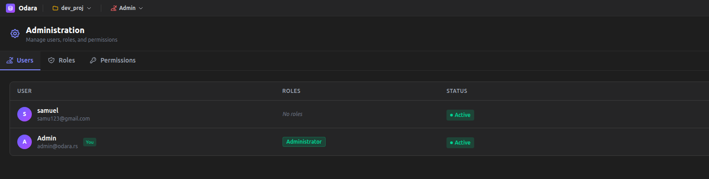
The Schedule page allows you to set up automated, recurring executions of your pipelines and maestros. Schedules are defined using cron expressions and can be managed through a visual builder or by entering a custom expression directly.
8.2 Cron Builder
The cron builder provides two modes:
Visual mode offers preset patterns:
- Every Minute —
* * * * * - Hourly — At a specific minute (e.g.,
30 * * * *for half past every hour) - Daily — At a specific time (e.g.,
0 6 * * *for 6:00 AM daily) - Weekly — On selected days at a specific time (e.g.,
0 9 * * 1-5for weekdays at 9 AM) - Monthly — On a specific day at a specific time (e.g.,
0 2 1 * *for 2 AM on the 1st)
Custom mode accepts a full 6-field cron expression:
second minute hour day_of_month month day_of_week 0 30 6 * * * # 6:30 AM daily 0 0 */2 * * * # Every 2 hours 0 15 10 1,15 * * # 10:15 AM on 1st and 15th
8.3 Timezone
Each schedule can be assigned a timezone. The default is UTC. Available timezones include:
- UTC, US/Eastern, US/Central, US/Mountain, US/Pacific
- Europe/London, Europe/Paris, Europe/Berlin
- Asia/Tokyo, Asia/Shanghai, Australia/Sydney
8.4 Associate
A schedule must be associated with either a pipeline or a maestro. Select the target from a dropdown that lists all available pipelines and maestros in the current project. When the schedule triggers, it creates a new execution of the associated item.
8.5 History
Each schedule maintains a history of triggered executions showing start time, duration, and status (success/failed/aborted). This helps you monitor the health of automated workflows and identify recurring failures.
9. Monitor
9.1 Overview
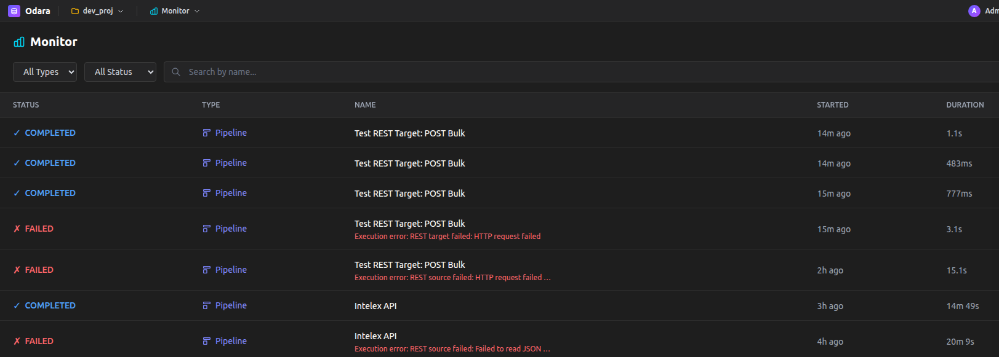
The Monitor page provides a unified view of all executions across pipelines and maestros. It serves as the central dashboard for tracking the health and status of your data workflows.
The execution table shows: name, type (Pipeline/Maestro), status, start time, duration, and row count.
9.2 Filtering
Filter executions by status and type:
| Status | Color | Meaning |
|---|---|---|
| Running | Emerald | Currently executing |
| Completed | Blue | Finished successfully |
| Failed | Red | Encountered an error |
| Aborted | Pink | Manually cancelled by user |
You can also filter by type: Pipeline or Maestro.
9.3 Details
Click any execution row to drill into the details view, which shows:
- Node-level breakdown with individual status, row count, and duration for each node
- Error messages and stack traces for failed nodes
- Input/output row counts per node
- Total execution duration and resource usage
9.4 Real-time
The Monitor page uses SSE streaming to provide live status updates. When a pipeline is running, you can see its progress update in real-time without refreshing the page. Row counts and node statuses update as each step completes.
10. Git (Source Control)
10.1 Panel
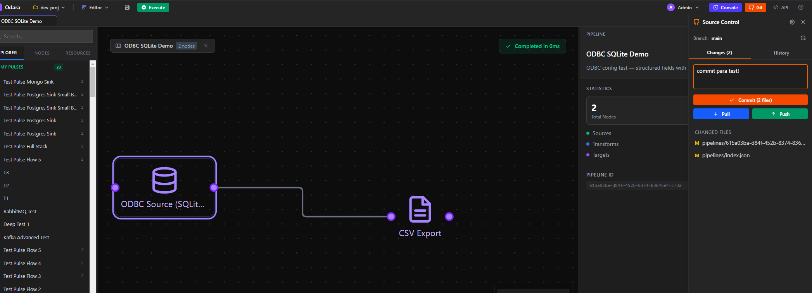
The Git panel is accessible from the right side of the editor. It provides a visual interface for Git source control operations directly within Odara, without needing to switch to a terminal.
The panel displays:
- Changes count — Badge showing number of modified files
- File list — All changed, added, and deleted files with status indicators
- Action buttons — Commit, Pull, and Push
10.2 Settings
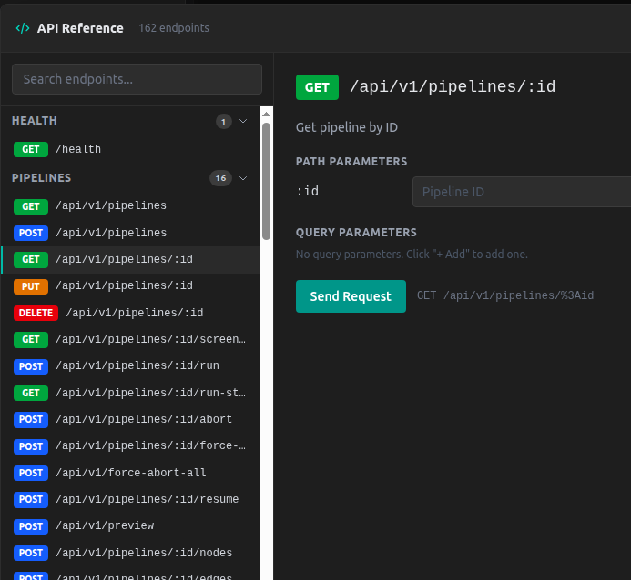
Configure Git integration through the settings dialog (gear icon in the Git panel):
| Setting | Description |
|---|---|
| Repository URL | Remote Git repository URL (HTTPS or SSH) |
| Personal Access Token | Authentication token for HTTPS remotes (GitHub, GitLab, etc.) |
| Commit Author Name | Name used in Git commits |
| Commit Author Email | Email used in Git commits |
10.3 Commit
To commit changes:
- Review the list of changed files in the Git panel
- Stage individual files by clicking the + icon, or stage all changes
- Enter a commit message in the text field
- Click Commit
10.4 Push & Pull
Push sends your local commits to the remote repository. Pull fetches and merges remote changes into your local copy. Both operations require a configured remote and valid credentials.
10.5 GitHub
Odara supports OAuth2 integration with GitHub for simplified repository cloning and authentication. Instead of manually entering a Personal Access Token, you can authenticate through GitHub's OAuth2 flow.
10.6 Test Connection
The "Test Connection" button in Git settings verifies that Odara can connect to the remote repository with the provided credentials. This checks both network connectivity and authentication before you attempt to push or pull.
11. Documentation
11.1 Page
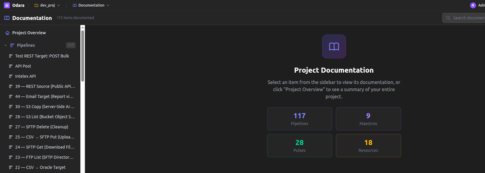
The Documentation page auto-generates comprehensive project documentation from your pipeline definitions, metadata, and screenshots. It provides a complete inventory of:
- Total item counts (pipelines, maestros, resources)
- Per-pipeline documentation with descriptions, node lists, and canvas screenshots
- Resource inventory with connection types and usage
11.2 Pipeline Docs
Each pipeline's documentation section includes:
- Description — User-provided description from pipeline properties
- Canvas screenshot — Auto-captured visual layout
- Node list — All nodes with type, name, and configuration summary
- Column schemas — Input/output column definitions for each node
- Dependencies — Data flow graph showing node connections
11.3 Export
Export your project documentation in two formats:
- PDF — Professional, print-ready document with all screenshots and details
- Markdown — Text-based format suitable for Git repositories, wikis, and static site generators
12. AI Assistant
12.1 Chat Panel
The AI Assistant is accessible via the floating button at the bottom-left of the editor. Click it to open a chat panel where you can interact with an AI model to get help with:
- Writing SQL queries for SQL Transform nodes
- Writing Python code for Python Transform nodes
- Debugging pipeline errors
- Understanding DataFusion SQL syntax
- Generating entire pipelines from natural language descriptions
12.2 Settings
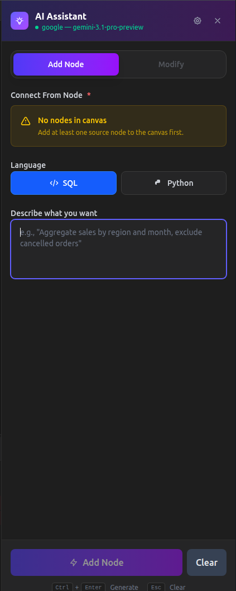
Configure the AI provider in Project Settings or the AI Settings dialog:
| Provider | Models | Best For |
|---|---|---|
| DeepSeek | deepseek-chat, deepseek-coder | Cost-effective code generation |
| OpenAI | gpt-4, gpt-4-turbo, gpt-3.5-turbo | General-purpose, high quality |
| Anthropic | claude-3-opus, claude-3-sonnet, claude-3-haiku | Long context, complex reasoning |
| Google Gemini | gemini-pro, gemini-ultra | Multi-modal, large context |
12.3 Code Generation
The AI can generate SQL and Python code from natural language descriptions. In the code editor of a SQL Transform or Python Transform, click the AI icon (or use the chat panel) and describe what you want:
SQL generation example:
-- Prompt: "Group by category and show top 5 categories by total revenue" -- Generated: SELECT category, SUM(price * quantity) AS total_revenue, COUNT(*) AS order_count, AVG(price) AS avg_price FROM input GROUP BY category ORDER BY total_revenue DESC LIMIT 5
Python generation example:
# Prompt: "Clean email addresses and flag invalid ones" # Generated: import re df['email'] = df['email'].str.strip().str.lower() pattern = r'^[a-zA-Z0-9._%+-]+@[a-zA-Z0-9.-]+\.[a-zA-Z]{2,}$' df['is_valid_email'] = df['email'].apply(lambda x: bool(re.match(pattern, str(x)))) return df
12.4 Pipeline Generation
The most powerful AI feature is full pipeline generation. Describe your data flow in natural language, and the AI generates a complete pipeline with nodes, connections, and configuration:
"Read a CSV file at /data/sales.csv, filter rows where amount is greater than 100, add a 20% tax column, then write the result to a PostgreSQL table called sales_processed."
The AI creates: CSV Source (configured with the path), Filter node (amount > 100 condition), Python Transform (tax calculation), PostgreSQL Target (table name and connection), and all the connecting edges.
More pipeline generation examples:
- "Join customer data from MySQL with order data from PostgreSQL, calculate total spending per customer, and export the top 100 customers to Excel."
- "Read JSON files from an S3 bucket, flatten nested objects, deduplicate by email, and load into MongoDB."
- "Pull data from the REST API at https://api.example.com/products, paginate through all pages, transform prices from USD to EUR, and save as CSV."
13. Administration
13.1 Users
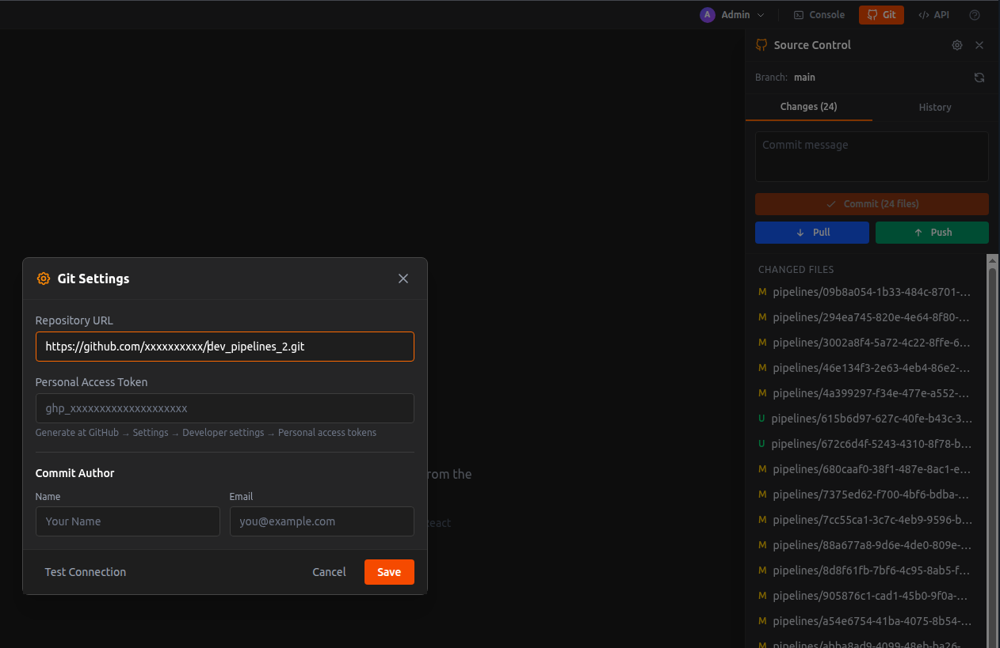
The Administration page provides user management for multi-user deployments. Administrators can:
- List users — See all registered users with their roles and status
- Create users — Add new users with username, email, password, and role assignment
- Edit users — Update user details, change roles, reset passwords
- Deactivate/Delete users — Set users as inactive or permanently remove them
13.2 Roles
Roles define a set of permissions that can be assigned to users. Odara comes with three default roles:
| Role | Description |
|---|---|
| Viewer | Read-only access to pipelines, executions, and documentation |
| Editor | Full access to create, edit, and execute pipelines and maestros |
| Admin | Full access plus user management, role management, and system settings |
You can also create custom roles with specific permission combinations tailored to your organization. For example, you might create a "Data Analyst" role with pipeline:read, pipeline:execute, and resource:read permissions, allowing analysts to run existing pipelines and view connections without being able to modify them.
To create a custom role:
- Navigate to Administration and select the Roles tab
- Click "Add Role" and enter a name and description
- Select the desired permissions from the checklist
- Save the role, then assign it to users from the Users tab
13.3 Permissions
Odara uses a granular permission model. Each permission controls access to a specific action:
| Permission | Scope |
|---|---|
pipeline:read | View pipeline definitions and executions |
pipeline:write | Create, edit, and delete pipelines |
pipeline:execute | Run and abort pipeline executions |
pipeline:delete | Delete pipelines permanently |
maestro:read | View maestro workflows |
maestro:write | Create and edit maestros |
maestro:execute | Run maestro orchestrations |
resource:read | View connections and variables |
resource:write | Create and edit resources |
admin:manage_users | Create, edit, and delete users |
admin:manage_roles | Create, edit, and delete roles |
admin:system_settings | Modify system-wide configuration |
14. API Reference
14.1 Overview

Odara exposes 162 REST API endpoints organized into logical groups. The API follows RESTful conventions with JSON request/response bodies. The base URL for all endpoints is:
http://localhost:3002/api/v1
The built-in API Reference page (accessible from the left menu) provides an interactive browser where you can explore all endpoints, view their parameters, and send test requests directly from the UI.
14.2 Endpoint Groups
Pipelines
| Method | Endpoint | Description |
|---|---|---|
GET | /pipelines | List all pipelines |
POST | /pipelines | Create a new pipeline |
GET | /pipelines/:id | Get pipeline by ID |
PUT | /pipelines/:id | Update pipeline definition |
DELETE | /pipelines/:id | Delete pipeline |
POST | /pipelines/:id/run | Execute synchronously |
GET | /pipelines/:id/run-stream | Execute with SSE streaming |
POST | /pipelines/:id/abort | Abort running execution |
GET | /pipelines/:id/executions | Get execution history |
POST | /preview | Preview node output |
Maestro
| Method | Endpoint | Description |
|---|---|---|
GET | /maestros | List all maestros |
POST | /maestros | Create maestro |
GET | /maestros/:id | Get maestro |
PUT | /maestros/:id | Update maestro |
DELETE | /maestros/:id | Delete maestro |
POST | /maestros/:id/run | Execute maestro |
GET | /maestros/:id/run-stream | Execute with SSE |
Metadata (Connections)
| Method | Endpoint | Description |
|---|---|---|
GET | /metadata | List all connections |
POST | /metadata | Create connection |
POST | /metadata/test-connection | Test database connectivity |
POST | /metadata/introspect-schema | Get tables and columns |
Context & Environments
| Method | Endpoint | Description |
|---|---|---|
GET | /context | List all variables |
POST | /context | Create/update variable |
GET | /environments | List environments |
POST | /environments | Create environment |
GET | /environment/current | Get active environment |
PUT | /environment/current | Set active environment |
AI
| Method | Endpoint | Description |
|---|---|---|
POST | /ai/generate/sql | Generate SQL from natural language |
POST | /ai/generate/python | Generate Python from natural language |
POST | /ai/generate | Generate full pipeline |
POST | /ai/chat | Chat with AI assistant |
Other Groups
Additional endpoint groups include: Schedules (CRUD + enable/disable), Auth/RBAC (login, register, roles, permissions), Git (status, commit, push, pull, settings), Files (browse, infer schema, upload), Examples (sample pipelines), and Community (shared templates).
For the complete list of all 162 endpoints with request/response schemas, use the built-in API Reference page in the Odara UI.
15. Appendix
15.1 Keyboard Shortcuts
| Shortcut | Action |
|---|---|
| Ctrl + S | Save current pipeline |
| Ctrl + Z | Undo last action |
| Ctrl + A | Select all nodes |
| Delete / Backspace | Remove selected node or edge |
| Space | Fit view (zoom to fit all nodes) |
| Ctrl + click | Multi-select nodes |
| Escape | Deselect all / close panel |
15.2 Supported Formats
| Format | Extension | Read | Write | Notes |
|---|---|---|---|---|
| CSV | .csv | Yes | Yes | Configurable delimiter, encoding |
| Excel | .xlsx | Yes | Yes | Sheet selection, header row |
| XML | .xml | Yes | Yes | Root/row element configuration |
| JSON | .json | Yes | Yes | Array of objects |
| NDJSON | .ndjson, .jsonl | Yes | Yes | Newline-delimited JSON |
| Parquet | .parquet | Yes | Yes | Apache Arrow native format, best performance |
15.3 DataFusion SQL
Odara uses Apache DataFusion as its SQL engine. DataFusion provides a full ANSI SQL dialect operating on Apache Arrow columnar data in memory.
Supported SQL statements:
SELECT,FROM,WHERE,GROUP BY,ORDER BY,HAVING,LIMITJOIN(INNER, LEFT, RIGHT, FULL OUTER, CROSS)UNION,UNION ALL,INTERSECT,EXCEPT- Subqueries (scalar, correlated, EXISTS)
- Common Table Expressions (
WITH ... AS) - Window functions (
ROW_NUMBER,RANK,DENSE_RANK,LAG,LEAD,SUM OVER,AVG OVER) CASEexpressionsCASTand type conversion
Commonly used functions:
| Category | Functions |
|---|---|
| String | LOWER, UPPER, TRIM, LTRIM, RTRIM, SUBSTRING, CONCAT, LENGTH, REPLACE, REGEXP_REPLACE, SPLIT_PART |
| Math | ABS, CEIL, FLOOR, ROUND, POWER, SQRT, MOD, LOG, LN |
| Date/Time | NOW, CURRENT_DATE, DATE_TRUNC, DATE_PART, EXTRACT, TO_TIMESTAMP, DATE_ADD, DATE_SUB |
| Aggregate | COUNT, SUM, AVG, MIN, MAX, STDDEV, VARIANCE, ARRAY_AGG |
| Conditional | COALESCE, NULLIF, CASE WHEN, IF |
15.4 Variable Interpolation
Odara supports variable interpolation in most text fields using the @variable_name syntax. At execution time, @variable_name is replaced with the variable's current value.
Interpolation contexts:
-- In SQL queries SELECT * FROM orders WHERE created_at >= '@cutoff_date' -- In file paths /data/@environment/output_@date.csv -- In REST URLs https://api.example.com/@api_version/users?page=@page_number -- In email subjects Daily Report for @date - @environment
Built-in variables:
| Variable | Value |
|---|---|
@pipeline_name | Name of the current pipeline |
@pipeline_id | UUID of the current pipeline |
@execution_id | UUID of the current execution |
@timestamp | Current ISO 8601 timestamp |
@date | Current date (YYYY-MM-DD) |
@environment | Name of the active environment |
15.5 Build Variants
The standard Odara Community download includes support for all connectors except Azure Blob Storage. Azure support is available as a separate build variant.
| Build | Includes |
|---|---|
| Standard (default download) | PostgreSQL, MySQL, Oracle, SQL Server, MongoDB, Snowflake, DB2, ODBC, S3, Google Drive, FTP/SFTP, REST, all file formats |
| Azure-enabled | Everything in Standard + Azure Blob Storage (List, Download, Upload, Copy, Delete) |
Check the Releases page for the Azure-enabled variant if you need Azure Blob Storage support.
By default, all connectors (PostgreSQL, MySQL, Oracle, SQL Server, MongoDB, Snowflake, DB2, ODBC, S3, Google Drive, FTP/SFTP, REST) are included in the standard build.
15.6 Docker
The project includes a docker-compose.services.yml file that provides all the external services you might need for development and testing:
| Service | Port | Notes |
|---|---|---|
| PostgreSQL | 5432 | Default: postgres/postgres |
| MySQL | 3306 | Default: root/root |
| MongoDB | 27017 | No auth by default |
| Oracle XE | 1521 | system/oracle |
| SQL Server | 1433 | sa/YourStrong!Passw0rd |
| DB2 | 50000 | db2inst1/db2inst1 |
| Redis | 6379 | No auth |
| Kafka | 9092 | With Zookeeper |
| RabbitMQ | 5672 / 15672 | Management UI on 15672 |
| NATS | 4222 | With JetStream |
| MQTT (Mosquitto) | 1883 | No auth |
| SFTP | 2222 | user/password |
Start all services:
docker-compose -f docker-compose.services.yml up -d
Start specific services:
docker-compose -f docker-compose.services.yml up -d postgres mysql mongodb
15.7 Commands
# Start Odara (Linux/macOS — installed via .deb or binary) odara # Start Odara on a specific port odara --port 8080 # Start Odara (Windows — from extracted folder) start.bat # Start Odara (macOS — from extracted archive) ./odara-macos-arm64/odara # Docker: start database services for development/testing docker-compose -f docker-compose.services.yml up -d # Docker: stop all services docker-compose -f docker-compose.services.yml down # Check if Odara is running curl http://localhost:3002/api/v1/health
15.8 Troubleshooting
Odara does not start
Check that port 3002 is not already in use: lsof -i :3002 (Linux/macOS) or netstat -an | findstr 3002 (Windows). If another process is using the port, stop it or start Odara on a different port with odara --port 8080.
Browser shows blank page or connection refused
Ensure Odara is running — check the terminal for errors. Open http://localhost:3002 (not 3000 or 5175). If the browser shows "connection refused", the server may have crashed on startup — check the terminal output for error messages.
Database connection fails
Test the connection using the "Test Connection" button in the metadata dialog. Verify the database service is running and accessible. Check firewall rules if connecting to a remote database. For Docker services, ensure the container is running with docker ps.
Python Transform fails
Ensure Python 3.9+ is installed and available in the PATH. Install the required package with: pip install pyarrow. On Windows, make sure to disable the Microsoft Store Python alias (see Installation section).
SQLite database is locked
SQLite uses WAL mode for concurrent access, but only one writer is allowed at a time. If you see "database is locked" errors, check for multiple API server instances running on the same database file. Stop duplicate processes.
Pipeline execution hangs
Use the Abort button to cancel the execution. Check the console for the last logged step. Common causes: database queries without timeouts, REST API calls to unresponsive servers, or infinite LoopWhile conditions.
Where are my files?
- SQLite database:
{project_path}/data/odara.db - Pipeline screenshots:
{project_path}/data/screenshots/ - API logs: Standard output of the API server process
- Frontend logs: Browser developer console (F12)
Oracle connector build fails
The Oracle connector uses the sibyl crate which requires Oracle Instant Client libraries. Ensure you have installed the Oracle Instant Client (Basic + SDK) for your platform and set the ORACLE_HOME and LD_LIBRARY_PATH (Linux) or DYLD_LIBRARY_PATH (macOS) environment variables.
export ORACLE_HOME=/opt/oracle/instantclient export LD_LIBRARY_PATH=$ORACLE_HOME:$LD_LIBRARY_PATH
SFTP connection refuses
Verify the target server allows password authentication (some servers require key-based auth only). Check that the port is correct (default 22 for SFTP). If using Docker, the SFTP container maps to port 2222 by default: docker-compose -f docker-compose.services.yml up -d sftp.
REST Source returns empty data
Check the Data Path setting. If the API response wraps data in an object (e.g., {"data": [...]}), set Data Path to $.data. Enable the browser network tab to inspect the raw response. Also verify that the authentication credentials are correct and the endpoint returns data for the given parameters.
Azure features not available
Azure Blob Storage nodes are only available in the Azure-enabled build variant. Download the Azure build from the Releases page.
Performance tuning for large datasets
For pipelines processing millions of rows:
- Use Parquet format instead of CSV for intermediate files (faster read/write, columnar compression)
- Increase database target batch size (e.g., 10000 rows per batch) for bulk inserts
- Use SQL Transform with DataFusion instead of Python Transform for aggregations (native Rust speed)
- Consider splitting large pipelines into multiple Maestro steps to manage memory usage
- Enable WAL mode on SQLite (enabled by default) for concurrent read performance
Resetting the project database
If your project database becomes corrupted or you want to start fresh, stop the API server and delete the SQLite files:
rm {project_path}/data/odara.db
rm {project_path}/data/odara.db-wal
rm {project_path}/data/odara.db-shm
The database will be recreated automatically when the API server starts. Note that this deletes all pipelines, metadata, execution history, and variables in the project.
Odara Community Edition — AI-First Open-Source ETL/ELT Platform
Built with Rust, React, Apache DataFusion, and Apache Arrow
Documentation generated for Odara Community. Licensed under Apache 2.0.